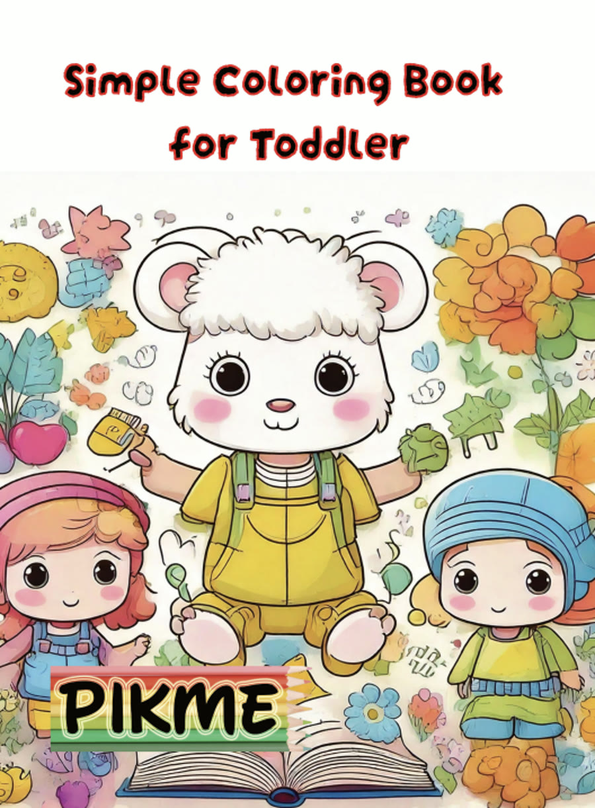
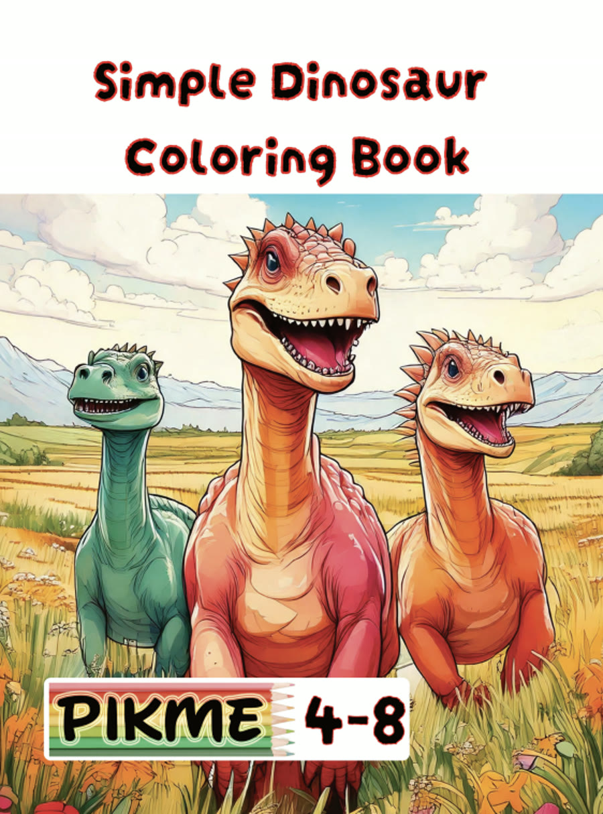
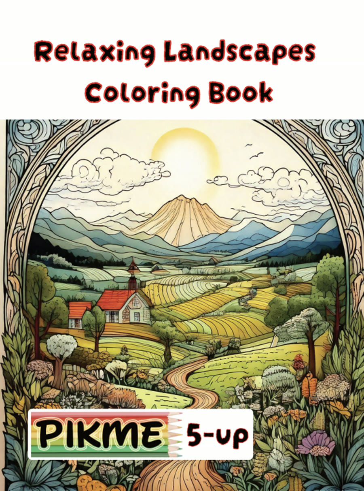
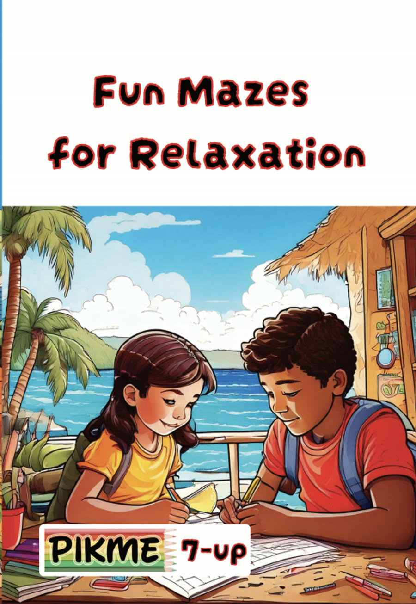

A gentle guide for the hour after school, when a child needs quiet before conversation.
Many children walk through the door looking fine and come apart within minutes. Others go very quiet and disappear into a corner. Neither one means something is wrong with your child or with your parenting. After a day of noise, rules, and people, a child often needs a quiet landing before anything else.
Overstimulation, sometimes called sensory overload, is not a diagnosis in itself, and everyone feels it at times, according to Mayo Clinic Press. Every child responds differently. A Mayo Clinic occupational therapist lists hiding or leaving the room, looking uncomfortable, trouble moving from one thing to the next, and becoming quieter or shyer among the possible signs.
Parenting site Understood describes a related pattern called after-school restraint collapse. Children hold their feelings in at school and let them out at home, where they feel safest. It can look like crying, yelling, or running off to a private place.
Understood suggests planning decompression time for the moment your child gets home. Offer a snack and some water first. A quiet space and soft music can help, and so can a hug or a blanket wrap if your child welcomes one.
Questions about the day can usually wait until your child brings them up. Even ten quiet minutes is a good place to begin.
Low-demand means no goal, no timer, no right way to do it, and no need to finish. Set one out, then step back.
Choose a page with big shapes and open spaces, plus a few crayons or colored pencils. Let your child pick the colors and stop whenever they like. The Simple Coloring Book for Toddler suits ages 2 to 4, and the Simple Dinosaur Coloring Book suits ages 4 to 8.
A maze gives restless hands a slow path to follow. Offer a pencil and let your child skip, repeat, or stop. The Easy Round Maze Coloring Book and Fun Mazes for Relaxation are made for ages 7 and up.
A familiar book, a soft blanket, and a dim lamp are enough. You can sit nearby without talking.
Open-ended building has no result to match. Choose pieces that are the right size for your child's age, and stay close with young children if any parts are small.
Soft instrumental music or gentle rain sounds, kept low. Let your child choose, and let them turn it off.
Some children settle through movement more than stillness. Mayo Clinic Press notes that child-led movement tends to help most children because they have some insight into their own needs, and that some children need more movement and others less. Offer a safe space and let your child decide what to do in it.
A small, quiet spot makes all of this easier: soft light, a blanket, and very little in view. Our free Quiet Time Starter Pack has a one-page guide to a calming corner and three coloring pages to print.
A calming corner guide and three printable coloring pages, sent to your inbox.
Occasional overstimulation is a normal part of childhood. If it happens often, or it affects daily life, keep a short record of when it happens, what came before it, and the time of day. Mayo Clinic Press suggests talking with your primary care provider if a pattern shows up, and asking whether an occupational therapist could help. Understood also suggests talking with your child's teacher and health care provider if after-school meltdowns are frequent.
Every title below is a real, live coloring book in our catalog, picked for this theme and not written for it.

Big, simple shapes made for little hands just learning to hold a crayon.
View Coloring Book
Friendly, large-scale dinosaur pages sized for smaller hands and shorter attention spans.
View Coloring Book
Wide, peaceful landscape scenes made for slow, unhurried coloring.
View Coloring Book
Gentle maze paths that give focused hands a slow, steady rhythm to follow.
View Coloring Book
Child-led movement can be helpful for overstimulated kids, Mayo Clinic Press.
Restraint collapse: Why kids fall apart after school, Understood.
More from us: calmkidssensory.com/links